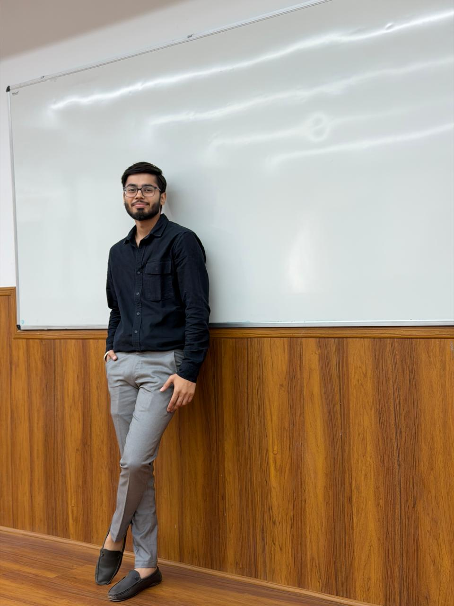

Udayveer
Project & Product Management
With a foundation in technology and immersive media, I aspire to work at the intersection of product, execution, and user experience. I'm particularly interested in exploring both tech and non-tech domains where structured problem-solving and impactful experiences matter.

Built for
ownership
I'm someone who gravitates toward the gaps — the messy, undefined problems that need a clear head, not just a skillset. My background in game development gave me firsthand experience with cross-functional teams, scope creep, creative blockers, and shipping under real constraints.
What I realized is: I'm more energized by how a product gets built than by the code itself. I want to be the person in the room who asks "what are we actually solving?" before we write a single line.
I'm now looking to apply that in a product or project context — somewhere I can absorb fast, contribute meaningfully, and grow into someone who ships things that matter.
Work that
shipped
Project Kaal
Lead · Vision & Execution- Scoped the MVP to 2 core mechanics instead of 8 ideas — reduced paralysis
- Created a shared doc structure so 15 people didn't step on each other
- Called a reset meeting when scope crept — realigned the team on what we were actually building
Pizza Ordering System
System Design · Full-stack Flow- Started with a flow diagram, not code — caught 3 edge cases before touching HTML
- Separated admin and customer views early — cleaner system, cleaner thinking
- Prioritized order-status visibility as the #1 user need
VR Space Shooter
Coordinator · Product Vision- Wrote a one-page "experience brief" so everyone knew what feeling we were building toward
- Introduced weekly check-ins to catch vision drift before it became rework
- Cut a mechanic mid-build that was cool but killed the pacing
Student Impact Dock
System Design · Data Pipeline- Weighted scoring (40% academics / 30% activities / 30% community) to reflect multi-dimensional growth
- Role-based login for Admin, Teacher, and Student — each with tailored dashboards
- Automated PDF report generation with matplotlib graphs and sorted leaderboards
SmartAgro – Farm Management System
System Design · Offline Architecture- CSV-based persistence for full offline capability — no database, no server, no internet required
- Modular feature separation: farmer profiles, crop management, and task scheduling as independent modules
- Productivity summaries generated by aggregating task completion data across time periods
Teams I've
led
Project Lead — Project Kaal
Led a 15-member multidisciplinary team across development, design, and art. Defined vision, scoped phases, assigned ownership, and navigated real coordination challenges — scope creep, blockers, availability gaps.
Vice President — Cinema Club
Co-led creative and operational direction for a multi-format storytelling club. Coordinated across film, silent, and concept-stage AR/VR projects. Managed timelines and drove projects to completion.
Team Captain — Volleyball
Led the NCU volleyball team to an Inter-Department Championship win and Rank 1 at the SGT University Inter-College Tournament. Managed game strategy, morale, and performance under pressure.
What I
bring
Let's talk about
what you're building
I'm actively looking for Project & Product Management internships. If you're building something and need someone who can handle ownership, ambiguity, and execution — let's connect.